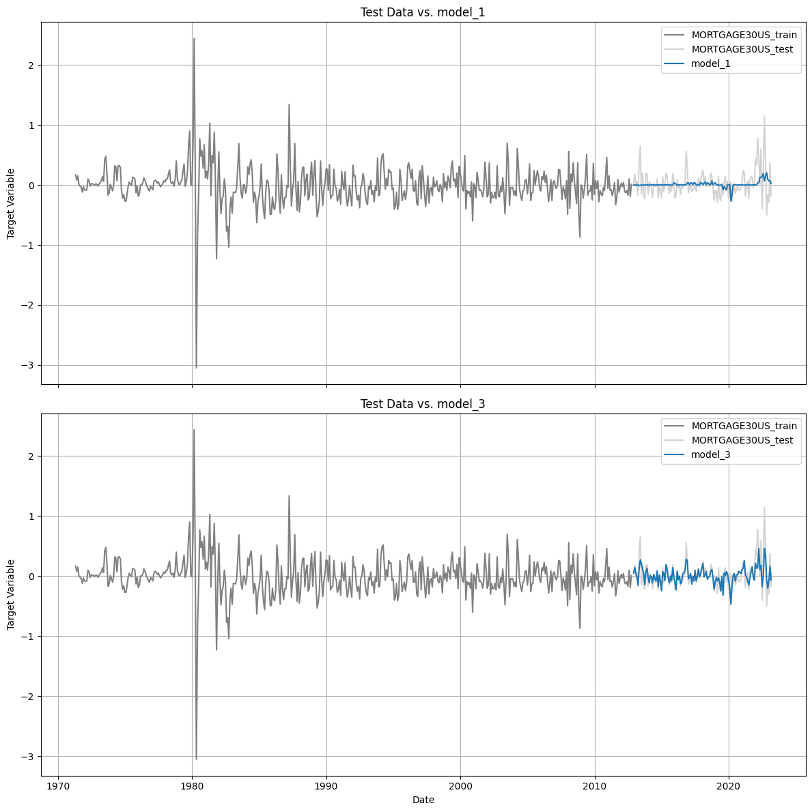

# System libraries
import glob
# ML libraries
import pickle
import pandas as pd
import numpy as np
from scipy import stats
import statsmodels.api as sm
from statsmodels.tsa.seasonal import seasonal_decompose
from statsmodels.tsa.ar_model import AutoReg
from statsmodels.tsa.stattools import adfuller, kpss
from statsmodels.tsa.arima.model import ARIMA
from statsmodels.tsa.stattools import coint
from arch.unitroot import PhillipsPerron, DFGLS
import xgboost as xgb
from numpy import argmax
from sklearn.metrics import accuracy_score, precision_recall_curve
from sklearn.model_selection import train_test_split
# Plotting libraries
import matplotlib.pyplot as plt
import seaborn as sns
%matplotlib inlineTime Series Model Validation POC
Import Libraries
Load Time Series Models
with open('../models/time_series/fred_loan_rates_model_1.pkl', 'rb') as f:
model_1 = pickle.load(f)
print(model_1.summary()) OLS Regression Results
=======================================================================================
Dep. Variable: MORTGAGE30US R-squared (uncentered): 0.286
Model: OLS Adj. R-squared (uncentered): 0.284
Method: Least Squares F-statistic: 198.8
Date: Tue, 09 May 2023 Prob (F-statistic): 3.22e-38
Time: 13:36:27 Log-Likelihood: -57.220
No. Observations: 498 AIC: 116.4
Df Residuals: 497 BIC: 120.7
Df Model: 1
Covariance Type: nonrobust
==============================================================================
coef std err t P>|t| [0.025 0.975]
------------------------------------------------------------------------------
FEDFUNDS 0.2901 0.021 14.100 0.000 0.250 0.330
==============================================================================
Omnibus: 139.024 Durbin-Watson: 1.581
Prob(Omnibus): 0.000 Jarque-Bera (JB): 806.633
Skew: 1.080 Prob(JB): 6.95e-176
Kurtosis: 8.849 Cond. No. 1.00
==============================================================================
Notes:
[1] R² is computed without centering (uncentered) since the model does not contain a constant.
[2] Standard Errors assume that the covariance matrix of the errors is correctly specified.with open('../models/time_series/fred_loan_rates_model_2.pkl', 'rb') as f:
model_2 = pickle.load(f)
print(model_2.summary()) OLS Regression Results
==============================================================================
Dep. Variable: MORTGAGE30US R-squared: 0.286
Model: OLS Adj. R-squared: 0.284
Method: Least Squares F-statistic: 198.3
Date: Tue, 09 May 2023 Prob (F-statistic): 3.99e-38
Time: 13:36:27 Log-Likelihood: -57.120
No. Observations: 498 AIC: 118.2
Df Residuals: 496 BIC: 126.7
Df Model: 1
Covariance Type: nonrobust
==============================================================================
coef std err t P>|t| [0.025 0.975]
------------------------------------------------------------------------------
const -0.0055 0.012 -0.448 0.654 -0.029 0.018
FEDFUNDS 0.2899 0.021 14.082 0.000 0.249 0.330
==============================================================================
Omnibus: 138.997 Durbin-Watson: 1.581
Prob(Omnibus): 0.000 Jarque-Bera (JB): 806.946
Skew: 1.080 Prob(JB): 5.94e-176
Kurtosis: 8.850 Cond. No. 1.69
==============================================================================
Notes:
[1] Standard Errors assume that the covariance matrix of the errors is correctly specified.with open('../models/time_series/fred_loan_rates_model_3.pkl', 'rb') as f:
model_3 = pickle.load(f)
print(model_3.summary()) OLS Regression Results
=======================================================================================
Dep. Variable: MORTGAGE30US R-squared (uncentered): 0.529
Model: OLS Adj. R-squared (uncentered): 0.528
Method: Least Squares F-statistic: 558.1
Date: Tue, 09 May 2023 Prob (F-statistic): 2.80e-83
Time: 13:36:27 Log-Likelihood: 46.439
No. Observations: 498 AIC: -90.88
Df Residuals: 497 BIC: -86.67
Df Model: 1
Covariance Type: nonrobust
==============================================================================
coef std err t P>|t| [0.025 0.975]
------------------------------------------------------------------------------
GS10 0.7428 0.031 23.624 0.000 0.681 0.805
==============================================================================
Omnibus: 216.020 Durbin-Watson: 1.949
Prob(Omnibus): 0.000 Jarque-Bera (JB): 27264.604
Skew: 0.803 Prob(JB): 0.00
Kurtosis: 39.213 Cond. No. 1.00
==============================================================================
Notes:
[1] R² is computed without centering (uncentered) since the model does not contain a constant.
[2] Standard Errors assume that the covariance matrix of the errors is correctly specified.with open('../models/time_series/fred_loan_rates_model_4.pkl', 'rb') as f:
model_4 = pickle.load(f)
print(model_4.summary()) OLS Regression Results
=======================================================================================
Dep. Variable: MORTGAGE30US R-squared (uncentered): 0.621
Model: OLS Adj. R-squared (uncentered): 0.620
Method: Least Squares F-statistic: 407.0
Date: Tue, 09 May 2023 Prob (F-statistic): 2.45e-105
Time: 13:36:27 Log-Likelihood: 100.84
No. Observations: 498 AIC: -197.7
Df Residuals: 496 BIC: -189.3
Df Model: 2
Covariance Type: nonrobust
==============================================================================
coef std err t P>|t| [0.025 0.975]
------------------------------------------------------------------------------
GS10 0.6298 0.030 20.970 0.000 0.571 0.689
FEDFUNDS 0.1756 0.016 11.005 0.000 0.144 0.207
==============================================================================
Omnibus: 252.158 Durbin-Watson: 1.918
Prob(Omnibus): 0.000 Jarque-Bera (JB): 4954.128
Skew: 1.729 Prob(JB): 0.00
Kurtosis: 18.060 Cond. No. 2.09
==============================================================================
Notes:
[1] R² is computed without centering (uncentered) since the model does not contain a constant.
[2] Standard Errors assume that the covariance matrix of the errors is correctly specified.with open('../models/time_series/fred_loan_rates_model_5.pkl', 'rb') as f:
model_5 = pickle.load(f)
print(model_5.summary()) OLS Regression Results
=======================================================================================
Dep. Variable: MORTGAGE30US R-squared (uncentered): 0.622
Model: OLS Adj. R-squared (uncentered): 0.619
Method: Least Squares F-statistic: 271.0
Date: Tue, 09 May 2023 Prob (F-statistic): 4.91e-104
Time: 13:36:27 Log-Likelihood: 100.97
No. Observations: 498 AIC: -195.9
Df Residuals: 495 BIC: -183.3
Df Model: 3
Covariance Type: nonrobust
==============================================================================
coef std err t P>|t| [0.025 0.975]
------------------------------------------------------------------------------
GS10 0.6283 0.030 20.805 0.000 0.569 0.688
FEDFUNDS 0.1741 0.016 10.718 0.000 0.142 0.206
UNRATE -0.0258 0.051 -0.508 0.612 -0.126 0.074
==============================================================================
Omnibus: 255.442 Durbin-Watson: 1.911
Prob(Omnibus): 0.000 Jarque-Bera (JB): 5061.282
Skew: 1.758 Prob(JB): 0.00
Kurtosis: 18.217 Cond. No. 3.48
==============================================================================
Notes:
[1] R² is computed without centering (uncentered) since the model does not contain a constant.
[2] Standard Errors assume that the covariance matrix of the errors is correctly specified.Load Training Datasets
# Extract the endogenous (target) variable from the model fit
train_df = pd.Series(model_1.model.endog, index=model_1.model.data.row_labels)
train_df = train_df.to_frame()
target_var_name = model_1.model.endog_names
train_df.columns = [target_var_name]
# Extract the exogenous (explanatory) variables from the model fit
exog_df = pd.DataFrame(model_1.model.exog, index=model_1.model.data.row_labels, columns=model_1.model.exog_names)
# Concatenate the endogenous (target) and exogenous (explanatory) variables
train_df = pd.concat([train_df, exog_df], axis=1)
train_df.head()| MORTGAGE30US | FEDFUNDS | |
|---|---|---|
| DATE | ||
| 1971-05-01 | 0.17 | 0.47 |
| 1971-06-01 | 0.08 | 0.28 |
| 1971-07-01 | 0.15 | 0.40 |
| 1971-08-01 | 0.00 | 0.26 |
| 1971-09-01 | -0.02 | -0.02 |
train_df.tail()| MORTGAGE30US | FEDFUNDS | |
|---|---|---|
| DATE | ||
| 2012-06-01 | -0.09 | 0.00 |
| 2012-07-01 | -0.17 | 0.00 |
| 2012-08-01 | 0.10 | -0.03 |
| 2012-09-01 | -0.19 | 0.01 |
| 2012-10-01 | 0.01 | 0.02 |
Load Test Datasets
Load raw test dataset.
file = '../datasets/time_series/fred_loan_rates_test_1.csv'
raw_test_df = pd.read_csv(file, parse_dates=['DATE'], index_col='DATE')
display(raw_test_df)| MORTGAGE30US | UNRATE | GS10 | FEDFUNDS | |
|---|---|---|---|---|
| DATE | ||||
| 2012-11-01 | 3.32 | 7.7 | 1.65 | 0.16 |
| 2012-12-01 | 3.35 | 7.9 | 1.72 | 0.16 |
| 2013-01-01 | 3.53 | 8.0 | 1.91 | 0.14 |
| 2013-02-01 | 3.51 | 7.7 | 1.98 | 0.15 |
| 2013-03-01 | 3.57 | 7.5 | 1.96 | 0.14 |
| ... | ... | ... | ... | ... |
| 2022-11-01 | 6.58 | 3.6 | 3.89 | 3.78 |
| 2022-12-01 | 6.42 | 3.5 | 3.62 | 4.10 |
| 2023-01-01 | 6.13 | 3.4 | 3.53 | 4.33 |
| 2023-02-01 | 6.50 | 3.6 | 3.75 | 4.57 |
| 2023-03-01 | 6.32 | 3.5 | 3.66 | 4.65 |
125 rows × 4 columns
Transform raw test dataset using same transformation used in the train dataset.
transform_func = 'diff'
if transform_func == 'diff':
test_df = raw_test_df.diff().dropna()Load Predictions
def get_model_prediction(model_fits_dict, df_test):
# Extract the training data from the first model fit
first_model_fit = list(model_fits_dict.values())[0]
train_data = pd.Series(first_model_fit.model.endog, index=first_model_fit.model.data.row_labels)
train_data = train_data.to_frame()
target_var_name = first_model_fit.model.endog_names
train_data.columns = [f'{target_var_name}_train']
# Initialize an empty DataFrame to store the predictions
prediction_df = pd.DataFrame(index=df_test.index)
prediction_df[f'{target_var_name}_test'] = np.nan
# Concatenate the train_data and prediction_df
combined_df = pd.concat([train_data, prediction_df], axis=0)
# Loop through each model fit
for model_name, model_fit in model_fits_dict.items():
# Prepare the test dataset
exog_names = model_fit.model.exog_names
X_test = df_test.copy()
# Add the constant if it's missing
if 'const' in exog_names and 'const' not in X_test.columns:
X_test['const'] = 1.0
# Select the necessary columns
X_test = X_test[exog_names]
# Generate the predictions
predictions = model_fit.predict(X_test)
# Add the predictions to the DataFrame
combined_df[model_name] = np.nan
combined_df[model_name].iloc[len(train_data):] = predictions
# Add the test data to the '<target_variable>_test' column
combined_df[f'{target_var_name}_test'].iloc[len(train_data):] = df_test[target_var_name]
return combined_df
# Replace with your list of model fits
model_fits = {
'model_1': model_1,
'model_3': model_3
}
prediction_df = get_model_prediction(model_fits, test_df)
display(prediction_df)| MORTGAGE30US_train | MORTGAGE30US_test | model_1 | model_3 | |
|---|---|---|---|---|
| DATE | ||||
| 1971-05-01 | 0.17 | NaN | NaN | NaN |
| 1971-06-01 | 0.08 | NaN | NaN | NaN |
| 1971-07-01 | 0.15 | NaN | NaN | NaN |
| 1971-08-01 | 0.00 | NaN | NaN | NaN |
| 1971-09-01 | -0.02 | NaN | NaN | NaN |
| ... | ... | ... | ... | ... |
| 2022-11-01 | NaN | -0.50 | 0.203037 | -0.066856 |
| 2022-12-01 | NaN | -0.16 | 0.092817 | -0.200567 |
| 2023-01-01 | NaN | -0.29 | 0.066712 | -0.066856 |
| 2023-02-01 | NaN | 0.37 | 0.069613 | 0.163425 |
| 2023-03-01 | NaN | -0.18 | 0.023204 | -0.066856 |
622 rows × 4 columns
def plot_predictions(prediction_df, subplot=True):
n_models = prediction_df.shape[1] - 2
if subplot:
fig, axes = plt.subplots(n_models, 1, figsize=(12, 6 * n_models), sharex=True)
for i in range(n_models):
axes[i].plot(prediction_df.index, prediction_df.iloc[:, 0], label=prediction_df.columns[0], color='grey')
axes[i].plot(prediction_df.index, prediction_df.iloc[:, 1], label=prediction_df.columns[1], color='lightgrey')
axes[i].plot(prediction_df.index, prediction_df.iloc[:, i + 2], label=prediction_df.columns[i + 2], linestyle='-')
axes[i].set_ylabel('Target Variable')
axes[i].set_title(f'Test Data vs. {prediction_df.columns[i + 2]}')
axes[i].legend()
axes[i].grid(True)
plt.xlabel('Date')
plt.tight_layout()
plt.show()
else:
plt.figure(figsize=(12, 6))
plt.plot(prediction_df.index, prediction_df.iloc[:, 0], label=prediction_df.columns[0], color='grey')
plt.plot(prediction_df.index, prediction_df.iloc[:, 1], label=prediction_df.columns[1], color='lightgrey')
for i in range(2, prediction_df.shape[1]):
plt.plot(prediction_df.index, prediction_df.iloc[:, i], label=prediction_df.columns[i], linestyle='-')
plt.xlabel('Date')
plt.ylabel('Target Variable')
plt.title('Test Data vs. Model Forecasts')
plt.legend()
plt.grid(True)
plt.show()plot_predictions(prediction_df, subplot=True)